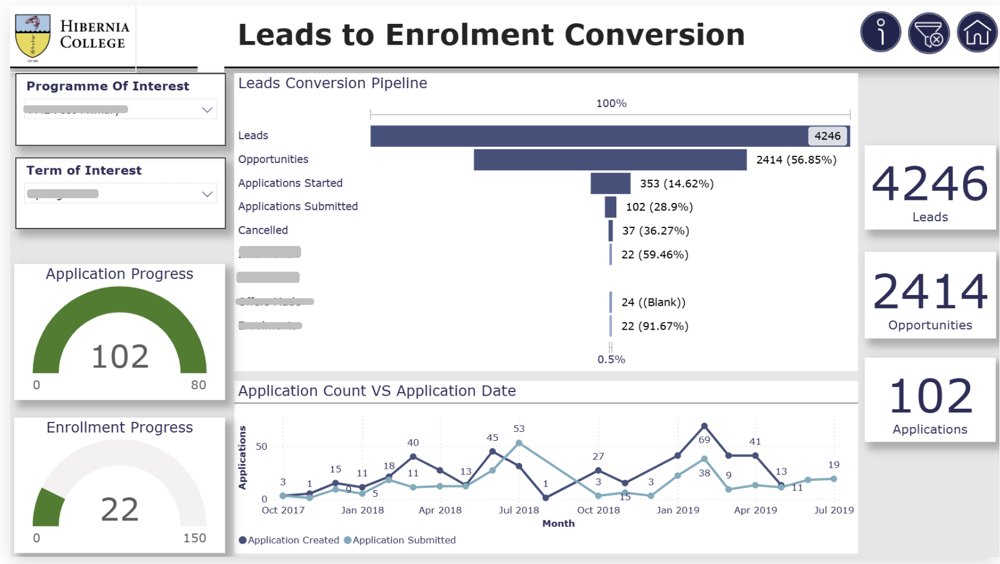
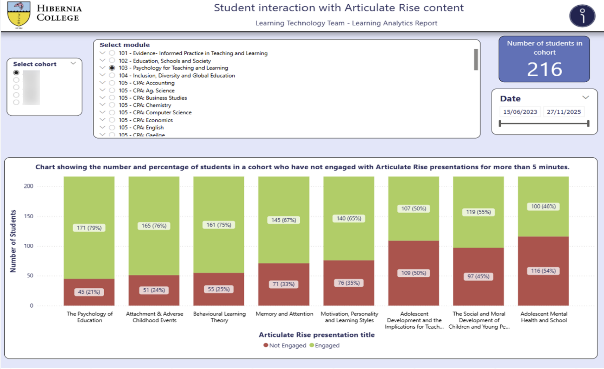
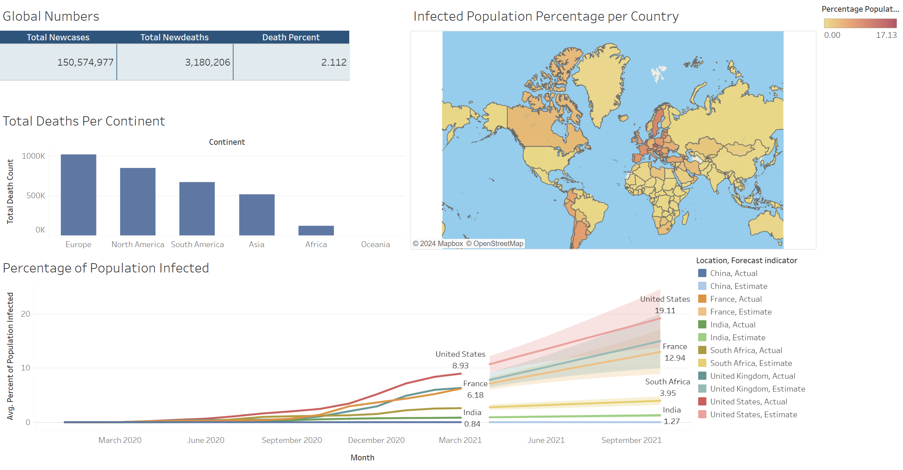
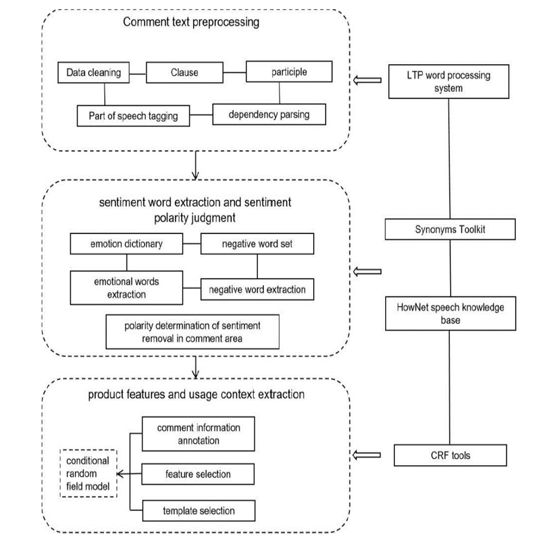
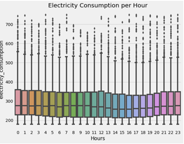
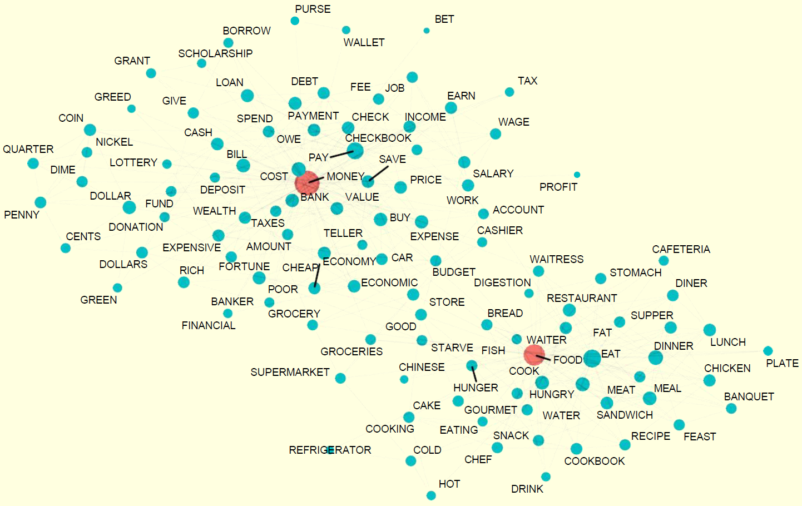

AYUSHA KAKKAD
Data Analyst | Business Intelligence | Data Solutions
I turn data into meaningful insights through analytics, reporting and automation.
With 3+ years of experience in data analytics, I work with SQL,
Power BI, Excel and Python to transform raw data into actionable
insights and practical business solutions.
My experience spans business intelligence, data visualisation,
data management, reporting and analytical problem-solving.
Currently open to: Full-time opportunities, freelance projects and collaborations.
Hibernia College | Professional Project

Developed an end-to-end Power BI dashboard to provide
management with visibility into business performance.
Analysed leads, enrolments, active students, targets,
login activity and year-on-year application trends.
Hibernia College | Professional Project

Developed an interactive Power BI dashboard to analyse
the student journey from Opportunity to Enrolment.
Explored conversion patterns, journey duration,
pipeline progression and advisor activities.
December 2025 | Hibernia College

Collaborated on a reporting solution to track student
engagement across individual chapters, modules and
sessions. Validated reporting outputs using Excel,
Python and Power BI to support accurate engagement analysis.
Independent Project | Interview Case Study

Independently developed an interactive Power BI dashboard
using a sample logistics dataset. Analysed revenue,
shipment performance, gross margins, transportation
operations and geographical distribution.
June 2024 | Independent Project

Cleaned and analysed global COVID-19 datasets using
SQL Server to explore infection rates, death percentages
and vaccination progress. Created interactive Tableau
visualisations to examine trends and geographical patterns.
Academic & Technical Projects
Selected academic and technical work across machine learning,
natural language processing, forecasting and data visualisation.
August 2023 | Master's Thesis

Explored lexicon-based, traditional machine-learning,
ensemble-learning and deep-learning techniques to analyse
customer reviews using the Yelp Reviews and Business Dataset.
Models included Random Forest, LSTM and BERT.
November 2022 | Academic Project

Developed machine-learning models to forecast hourly
electricity consumption using time-series data.
Applied preprocessing, feature engineering and regression
techniques, including XGBoost, Random Forest and Linear Regression.
March 2023 | Academic Project

Analysed word associations using graph theory and network
analysis. Explored connectivity, personalised PageRank
and centrality measures to identify influential words
and relationships within the network.